SafeSpace
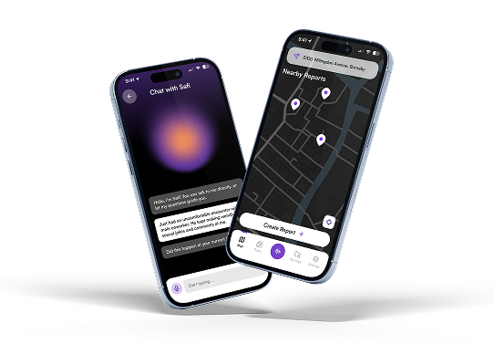
Role
Full-Stack Developer
Timeline
3 months
Team
8 people
Tools
Figma, React Native, Illustrator, Photoshop, Premiere Pro
Overview
SafeSpace is a secure mobile platform built with React Native and Expo Go to empower women and gender-diverse individuals in the trades. The app enables users to document workplace incidents through manual entries, voice recordings, or a specialized WatsonX-powered chatbot named Safi, ensuring privacy via passcode protected reports. Utilizing GPT-4o mini, SafeSpace automatically translates recordings and transforms raw data into anonymous summaries and actionable site solutions. By allowing users to share reports to a global public feed, the app fosters industry-wide transparency while providing site leads with the practical tools needed to build safer, more inclusive work environments.
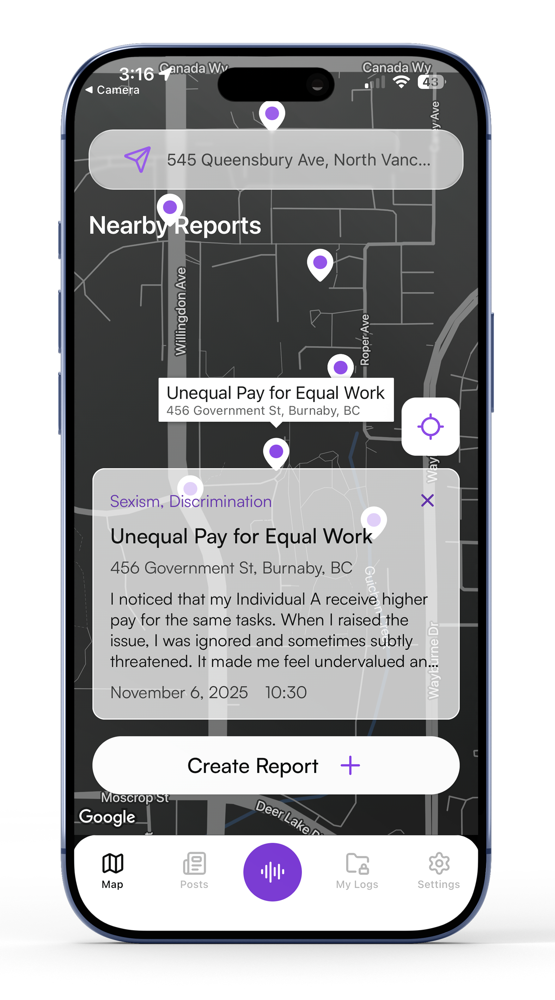
Reports
Each pin on the map represents an individual, anonymized report tagged by GPT-4o mini to highlight specific workplace issues at a glance. Selecting a pin reveals a concise summary of the incident alongside passcode-protected, AI-generated solutions to improve site safety and equity.
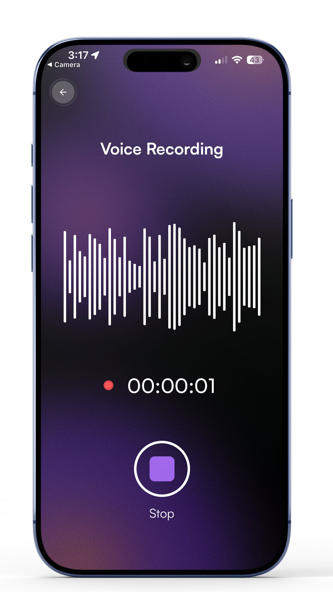
Record
Users can instantly capture incidents via voice recording, which GPT-4o mini then auto-translates and converts into an accurate transcript. This ensures critical details are documented safely and accurately in the heat of the moment.
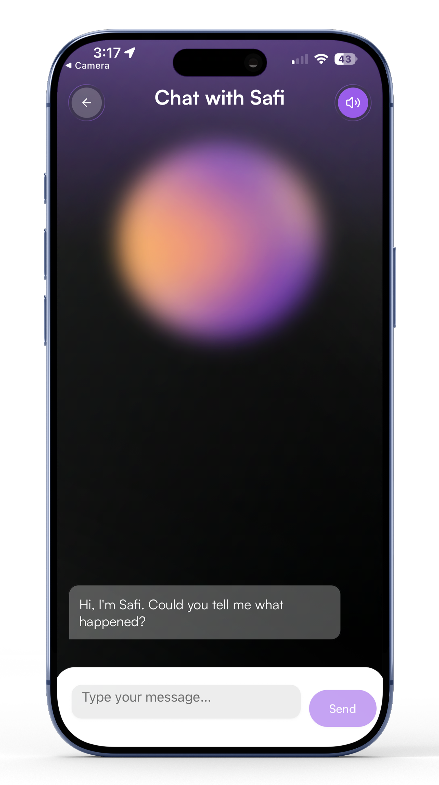
Safi
Safi is an interactive WatsonX-powered chatbot that guides users through the reporting process by asking clarifying questions to capture incident details accurately. It works alongside GPT-4o mini to transform these conversations into secure, passcode-protected summaries with actionable site solutions.
Competitive Analysis
An analysis of eight key competitors, including specialized platforms like ACCESS, WomanACT, and WorkerSafety Pro, reveals that while they excel at providing comprehensive educational resources and safety training, they often suffer from dense, overwhelming interfaces and limited real-time interaction. This common lack of streamlined navigation and personalized feedback highlights a critical market gap that an AI-driven solution can fill by instantly converting anonymous reports into clear, actionable site improvements. By prioritizing a simplified user experience and replacing slow manual processes with immediate summaries, the proposed app addresses the administrative delays and user isolation prevalent in current industry offerings.
More Info →User Research
To better understand the systemic barriers facing women and gender-diverse individuals in the trades, the team surveyed 8 people and had in depth interviews with 4 people. This research identified a critical need for secure, anonymous communication channels, directly informing the development of SafeSpace as a tool to bridge the gap between worker isolation and actionable site improvements.
More Info →66.7%
feel isolated due to their gender
62.5%
want to be able to report harassment and unsafe work conditions in an app
The majority
value anonymity and want to protect themselves while also voicing concerns
Personas
The team developed two distinct personas, Noah and Aiyana, to encapsulate the specific safety requirements and lived experiences of gender-diverse individuals and women in the trades. These profiles emphasize a shared, critical need for high-security anonymity to combat industry frustrations such as workplace aggression, social isolation, and the fear of professional retaliation.
More Info →Primary Persona
Name: Noah
Age: 23
Gender: Non-Binary (They/Them)
Location: Lower-mainland, BC
Occupation: Electrician
Martial Status: Single
Goals and Motivations
- Being able to freely express themselves in a judgment free work environment
- Values personal privacy and anonymity when reporting harassment and safety incidents
Pain Points and Frustrations
- Stress from workplace aggression
- Risk of harassment or discrimination
- Fear of being outed
Secondary Persona
Name: Aiyana Tarbell
Age: 34
Gender: Female (She/Her)
Location: Lower-mainland, BC
Occupation: Longshore worker
Martial Status: Married, one child
Goals and Motivations
- Being able to freely express themselves in a judgment free work environment
- Values personal privacy and anonymity when reporting harassment and safety incidents
Pain Points and Frustrations
- Stress from workplace aggression
- Risk of harassment or discrimination
- Fear of being outed
Style Guide
The visual direction for SafeSpace employs a high-contrast palette of violet, orange, and yellow to ensure maximum readability in various job site lighting conditions. Utilizing the clean, sans-serif Satoshi typeface, the interface maintains a professional yet accessible tone that prioritizes clarity across all text hierarchies. This aesthetic is anchored by a symbolic logo featuring a handshake integrated into a hard hat, reinforcing the app’s mission of fostering solidarity and safety within the trades.
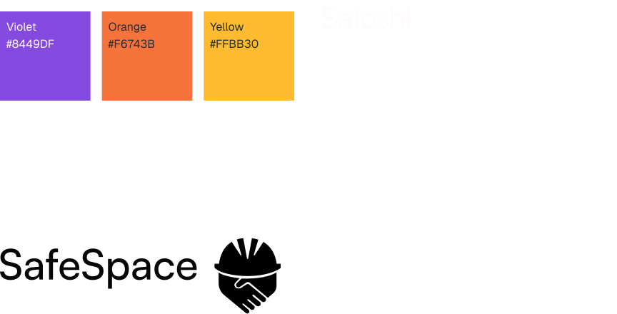
Sitemap & Userflow
Sitemap
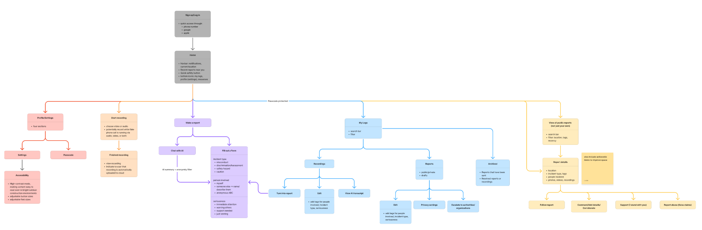
Userflow

Wireframes
This design progression showcases the evolution of three core screens: Home, Recording, and Individual Report Details. From initial wireframes to implemented, each iteration refines how users interact with creating a "safety-first" aesthetic that builds trust for women and gender-diverse professionals.
All Screens →Coding
Throughout the development of SafeSpace, there were many challenges, including choosing React Native and Expo Go, the implementation of a customized navbar, and the integration of Safi. Using React Native and Expo Go allowed for efficient cross-platform development with a single codebase, ensuring the app is accessible on various devices. The navbar was customized to include a prominent, recording button for quick access across the app, while Safi utilizes WatsonX to guide users through the reporting process.
GitHub →

Why React Native and Expo Go?
Pros
-
Access mobile-specific feature easily
- Ex. Recording
- Lots of resources to help with learning
- Expo lets testing be done on mobile devices
Cons
-
Not taught, so the team will need to learn
- However, the team has experience with React
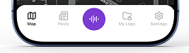
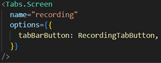
Navbar
Challenges:
- Middle recording button
- No easy way to do it
- Can only add icon, not circular background
Solutions:
- Required creating a custom tabBarButton instead
- Required fiddling with positioning to get it in the center
Safi
Challenges:
- Using IBM’s WatsonX for the first time
- AI asking irrelevant questions
- AI ignoring specific instructions
Solutions:
- Had help from instructor
- Changed prompt to exclude specific questions
- Simplified prompt to only include less information
Takeaways
Working on this project was a massive growth experience, and winning 1st place in our school’s presentation competition was the perfect validation of that effort.
Communication & Confidence
I significantly improved my confidence in sharing ideas and contributing to technical conversations. I learned to take more initiative, expressing my opinion on which features I wanted to own or focus on.
Team Collaboration
Working closely with other developers taught me how to coordinate tasks effectively to meet tight deadlines. I realized how much faster we could move when our workflows were aligned.
Preparation & Visualization
I discovered that practicing and visualizing the presentation beforehand makes a huge difference. It turned a high-pressure situation into something much more manageable and natural when it was time to go on stage.
Promotional Materials
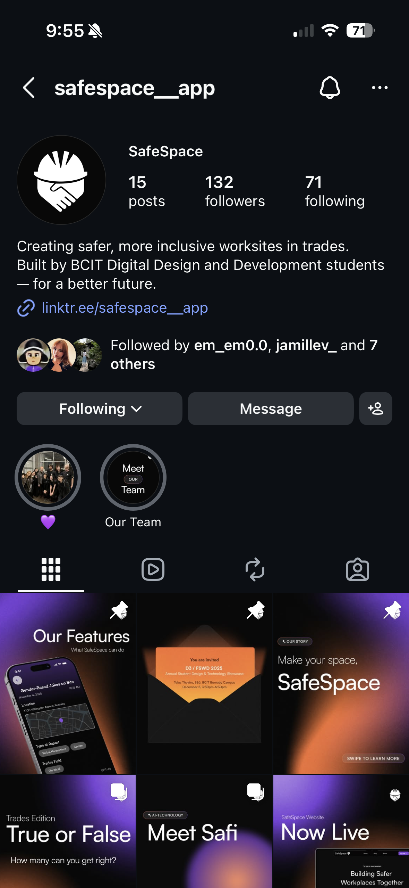
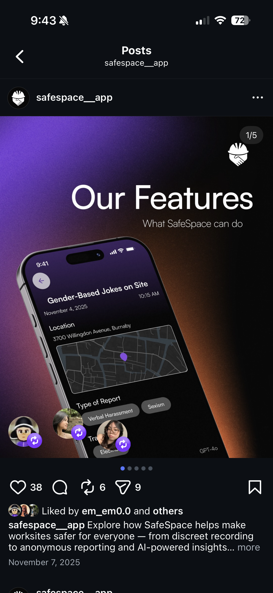
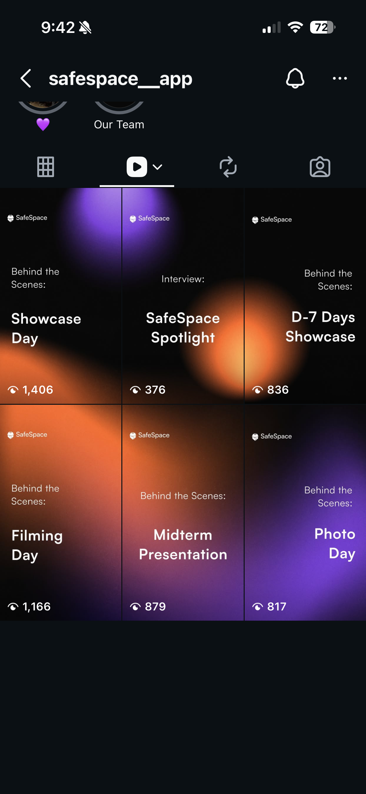
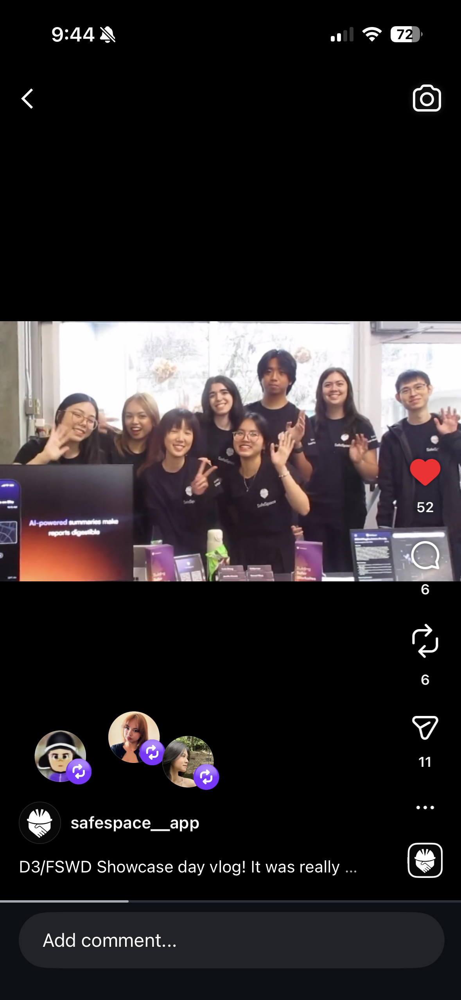
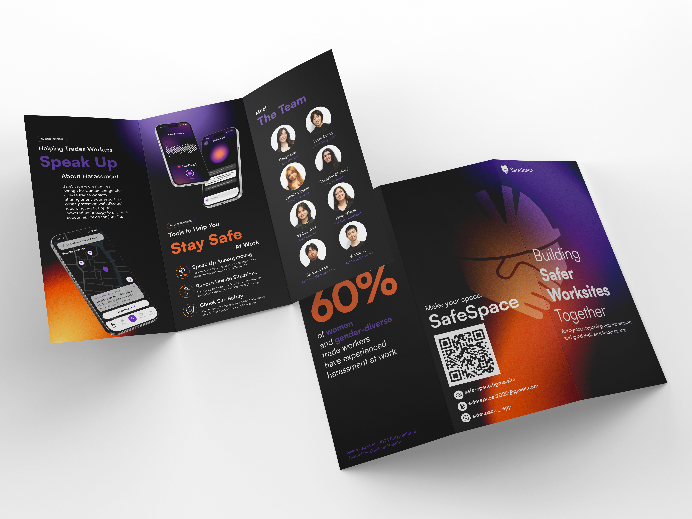
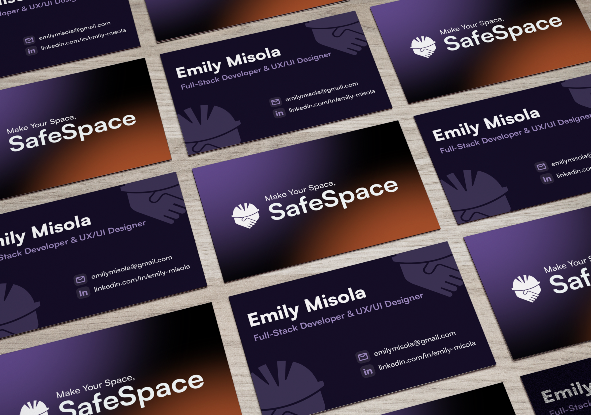
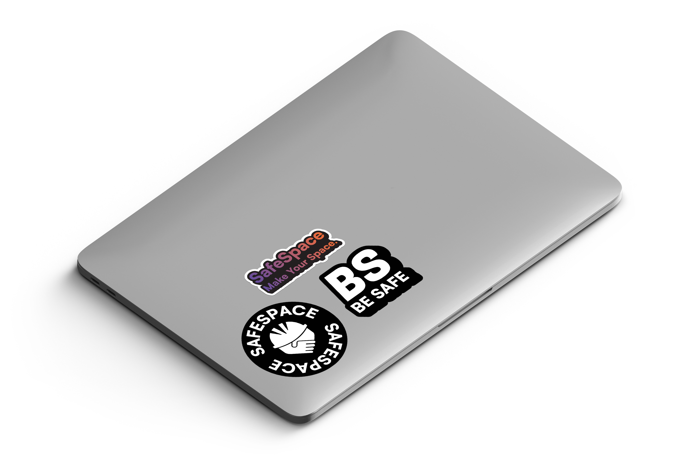